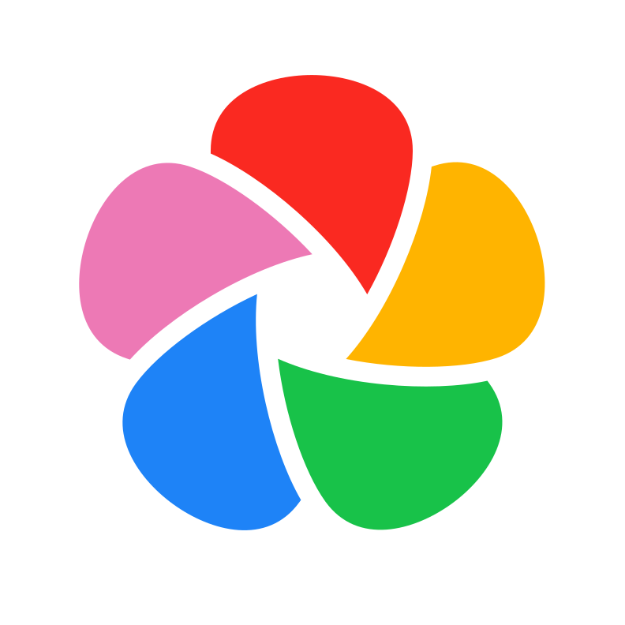

PONTE FOTOS · PARA MAC
Suas memórias. Nos dois sentidos.
Fotos da Apple, pastas e Immich, conectados por você.
01 / 08
Fotos da Apple
Ponte Fotos

Immich

Envie para o Immich. Traga de volta para o Fotos.
Transferências escolhidas por você · sem sincronização contínua automática